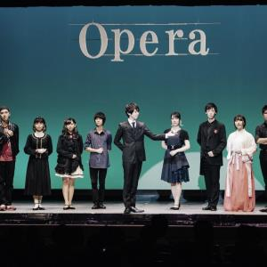

マギーグルッペについて

マギーグルッペ奇術研究会では舞台を使ったステージマジック、
観客の目の前で行うテーブルマジック（クロースアップ）の2つを練習、発表しています。
サークルに入るのは初心者の方が大半なので安心して入部できます。
もちろん経験者の方も大歓迎です！！
そのためマジックに本気で取り組む人もいれば、
マジックはあまりやらないけど見るのが好きという人もいます。
様々なイベントもあり、他大学との交流もあるのでマジック以外の楽しみもあります。
和泉校舎と御茶ノ水校舎両方に部室があって部員は自由に使えます。
また、当サークルは関東大学奇術連盟に加盟しており、
定期発表会や学園祭ではステージマジックを披露しています。
そして出演依頼があった場合は、御要望によってステージマジック、
テーブルマジックの両方をしています。
出演依頼についての詳細はcontactのページをご覧下さいませ。